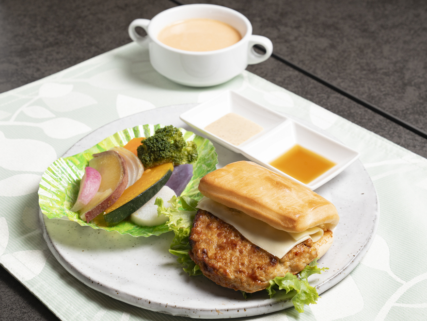
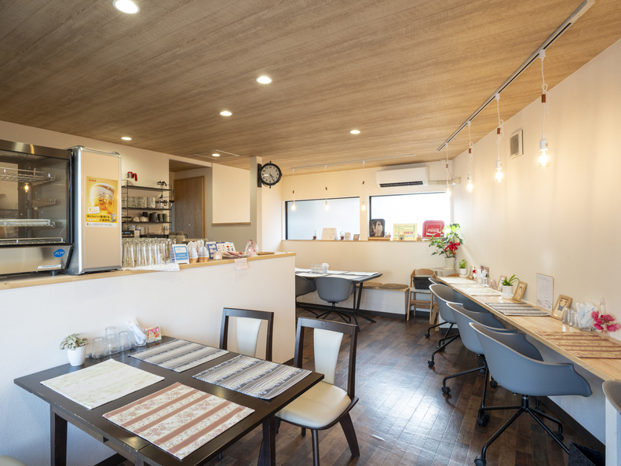
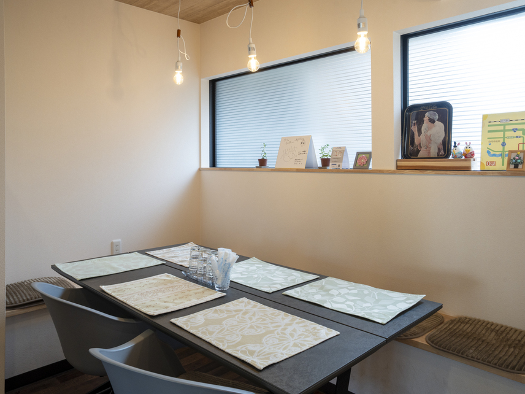

★ ようこそ！「カフェるぽん」へ ★
ここは白河の、ちょっと昔の時間が残っている場所です。
橋を渡って、ゆっくりしていってください。
橋を渡って、ゆっくりしていってください。
福島県白河市、向新蔵。むかし賑わった町の一角に「カフェるぽん」があります。築50年以上の建物を改装した、小さなカフェです。

▲ お店のようす（デジタルカメラで撮影）
※画像が少々暗くてすみません m(_ _)m
※画像が少々暗くてすみません m(_ _)m
◆ 親不孝橋と向新蔵のお話 ◆

▲ 昔の向新蔵のイメージです。
資料をもとに作成したイメージ画です。
小さくてすみません。m(_ _)m
資料をもとに作成したイメージ画です。
小さくてすみません。m(_ _)m
【一、向新蔵と白河遊郭】
江戸時代の白河は奥州街道の要衝で、白河宿・白河藩の城下町として栄えました。明治になると貸座敷・妓楼は谷津田川を越えた南側の向新蔵へ集められ、いわゆる「白河遊郭」が形成されました。明治後期から大正期には「新地」と呼ばれ賑わったと伝えられています。
【二、「親不孝橋」という呼び名】
新蔵町から谷津田川を渡って向新蔵へ入る新橋は、遊郭へ通う人々が渡ったことから俗に「親不孝橋」と呼ばれてきました。日常の城下町から夜の歓楽街へ切り替わる境目のような場所でした。
【三、昭和、そして現在へ】
昭和33年（1958年）の売春防止法施行後、周辺はスナック、小料理屋、バー、居酒屋などが集まる歓楽街へ姿を変えました。現在は静かな町になりましたが、新橋と呼び名には昔の記憶が残っています。
| Le Pont（ル・ポン） |
|---|
| フランス語で「橋」 人と人の架け橋になりたい、という思いを込めた名前です。 |
★☆★ お昼のおすすめです！！ ★☆★


※写真が小さくてすみません。m(_ _)m

※写真が小さくてすみません。m(_ _)m
| おしながき | おねだん |
|---|---|
| ★ パンと野菜のせいろ蒸し Set | 1,320円 |
| フレンチトースト Set | 1,100円 |
| ハンバーガー Set | 1,100円 |
| チキンバーガー Set | 1,100円 |
| ダブルバーガー Set | 1,430円 |
| ナポリタン Set | 1,100円 |
| シフォンケーキ SET | 880円 |
◆ お店のご案内 ◆


▲ 店内のようすです。写真が暗くてすみません。
| 店名 | カフェるぽん |
|---|---|
| 住所 | 〒961-0925 福島県白河市向新蔵50 |
| 電話 | 050-5456-5041 |
| 営業 | 木・金・土・日・祝 11:00～15:00／夜17:30～22:00予約制 |
| 定休日 | 月・火・水 |
| 席 | 18席 |
| 駐車場 | 8台 |
| 設備 | 無料Wi-Fi・電源・全席禁煙・テラス席ペット可 |
★ 当店は現在も営業しております ★
ホームページが古く見える場合がありますが故障ではありません。
店主が一生懸命更新しております。(^_^;)
ホームページが古く見える場合がありますが故障ではありません。
店主が一生懸命更新しております。(^_^;)
◆ 交通案内 ◆
JR白河駅より徒歩約10分。白河市役所より徒歩約5分。
お車は「福島県白河市向新蔵50」を目印にお越しください。駐車場8台。
① 白河駅方面からまちなかへ。
② 市役所方面から向新蔵へ。
③ 親不孝橋を渡り、昔の繁華街だった静かな通りへ。
④ 「本当にこっちでいいのかな？」と思っても、もう少し進んでください。
⑤ カフェるぽんがあります！！
② 市役所方面から向新蔵へ。
③ 親不孝橋を渡り、昔の繁華街だった静かな通りへ。
④ 「本当にこっちでいいのかな？」と思っても、もう少し進んでください。
⑤ カフェるぽんがあります！！
◆ 管理人のひとりごと ◆
9月29日（火）
お料理と店内の写真を追加しました！！ 写真を入れるだけで一苦労でした。(^^;)
これからも少しずつ更新します。
お料理と店内の写真を追加しました！！ 写真を入れるだけで一苦労でした。(^^;)
これからも少しずつ更新します。
管理人 るぽん
★ またのお越しをお待ちしております ★
このページを「お気に入り」に追加してネ！
★ただいまホームページ作成勉強中！！★